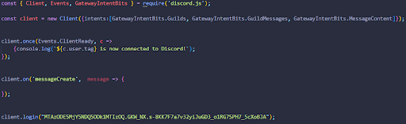
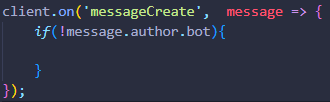
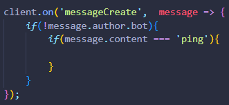
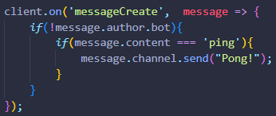
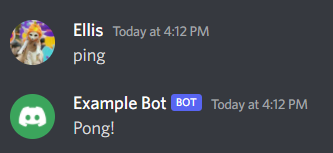
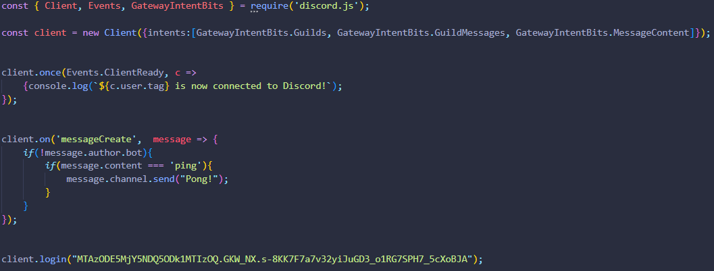

Basic message commands
Now that your bot is online, you’ll need to add some interactions with it. We’ll create a simple ‘ping’ command that will send back the message “pong”. First, you’ll need to have code run whenever a message is sent. Add “client.on(‘messageCreate’, message => {});” between the login and our connect code. This will let the code know whenever a message is sent and then the content of the message will be stored in the “message” that we placed afterwards.

Inside of the curly brackets, we’ll next add a simple check to prevent the bot from looping. Add “if(!message.author.bot){}”. This will prevent the bot from reading its own messages.

Now we’ll add the ping command. Add “if(message.content === ‘ping’){}”. This will check if the message that was sent was the word “ping”.

Now we’re on the last step. We’ll finally send a reply message, in this case “Pong!”. Add “message.channel.send(“Pong!”);” This will send the response into the same channel as the original message.

Finally, back in the terminal, type “node index.js” once again and head over to your Discord server. Now when you type “ping” the bot should send “Pong!”.

Congratulations! Your bot is now working! You can add as many of these commands as you would like!
